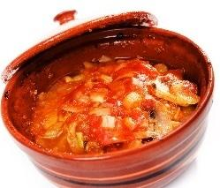
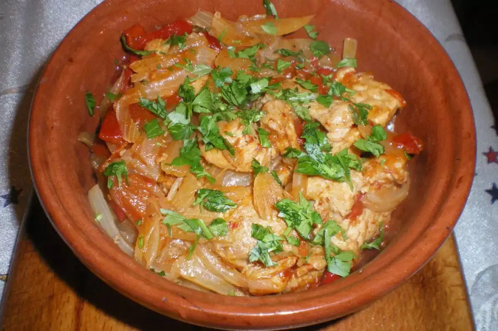
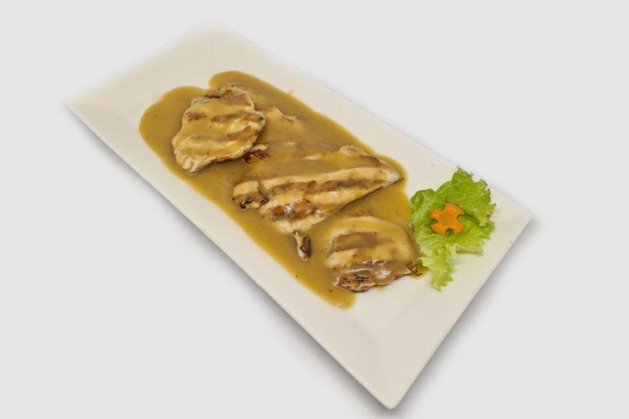
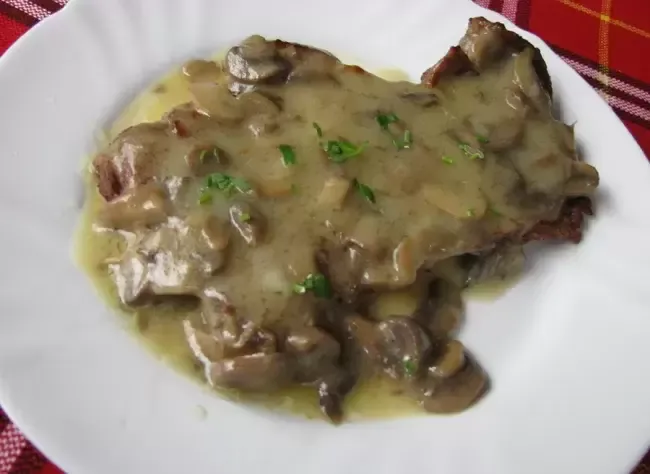
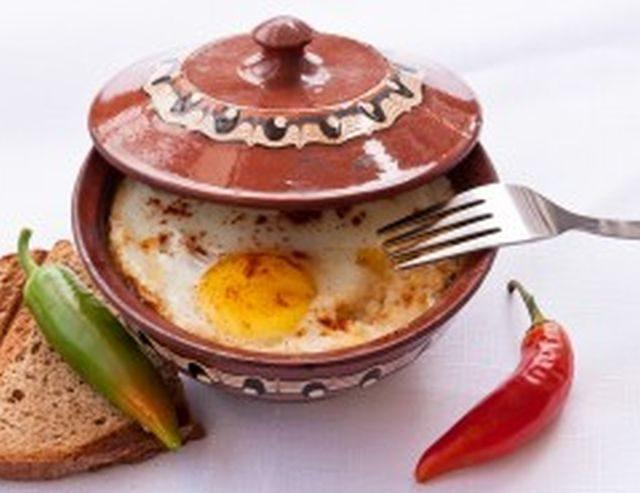
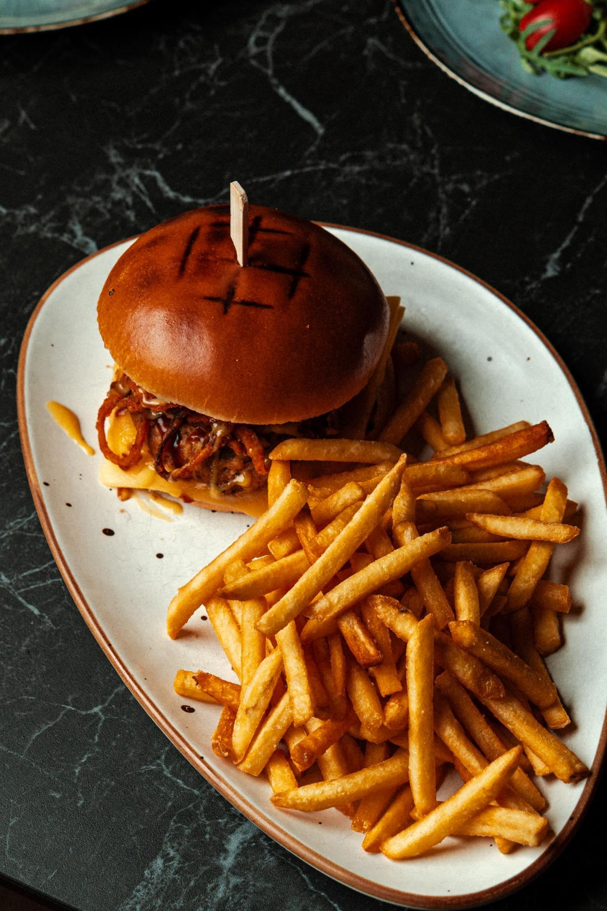
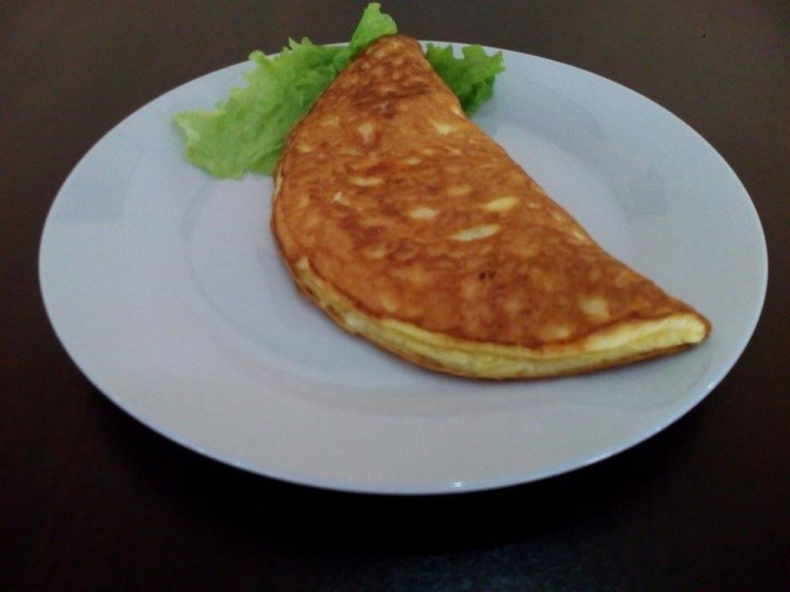
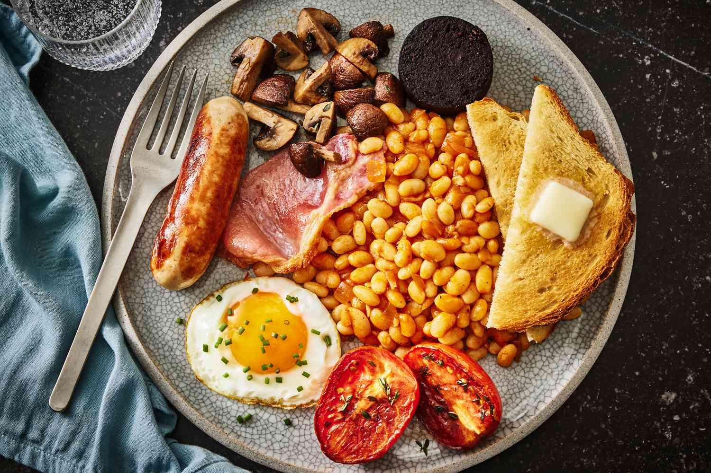

Ana Yemekler

Tavuk Kavarma
Soğan, biber ve baharatlarla güveçte pişirilmiş tavuk.
0.400 кг / 13.80 лв

Domuz Kavurma
Sebzelerle aromatik domuz yahni.
0.400 кг / 13.80 лв

Mantarlı Tavuk Fileto
Kremalı mantar soslu sulu tavuk fileto.
0.350 кг / 15.90 лв

Mantarlı Domuz Eti
Zengin mantar soslu yumuşak domuz eti.
0.350 кг / 15.90 лв

Shopska Usulü Peynir
Güveçte domates, yumurta ve biberle pişmiş peynir.
0.350 кг / 9.90 лв
Patatesli Burgerler

Tavuk Burger
Sebzeli ve patatesli sulu tavuk köftesi.
0.500 кг / 14.00 лв
Domuz Burger
Domuz köftesi ve garnitürlü burger.
0.500 кг / 14.00 лв
Dana Burger
Klasik dana burger patatesle.
0.500 кг / 14.00 лв
Vejetaryen Burger
Taze salata ile bitkisel burger.
0.500 кг / 13.80 лв
Omlet

Sade Omlet
Yumurtadan yapılan klasik omlet, isteğe göre ek malzeme.
0.300 кг / 7.00 лв
Ekstralar (isteğe bağlı):
+ Kaşar peyniri — 0,050 kg / 1,20 BGN
+ Beyaz peynir — 0,050 kg / 1,20 BGN
+ Pastırma — 0,050 kg / 2,00 BGN
+ Jambon — 0,050 kg / 2,00 BGN
+ Mantar — 0,050 kg / 1,20 BGN
+ Sebze karışımı — 0,050 kg / 1,20 BGN
+ Lukanka — 0,050 kg / 2,00 BGN
+ Yumurta — 1 adet / 1,60 BGN
>
Английска закуска

İngiliz Kahvaltısı
Yumurta, fasulye, sosis, pastırma, kızarmış ekmek içeren tam klasik kahvaltı.
0.600 гр / 19.90 лв